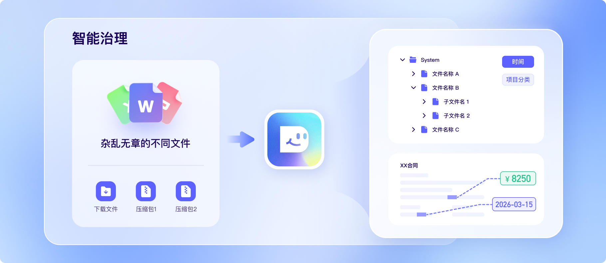

指令驱动
给出目标和工作文件夹，AI 自主规划路径、调度技能、闭环交付。
给出目标和工作文件夹，AI 自主规划路径、调度技能、闭环交付。
文件夹级权限、风险操作二次确认，数据不出设备。
内置优质技能，支持自动创建与引入新技能，覆盖更多业务需求。
执行过程流式输出，用户可查看文件、网页、操作与结果。
Core Capabilities
无需复杂配置，App 一键安装、开箱即用。会说话就能用，自然语言交互让 AI 帮你搞定一切。
内置百度搜索等优质 Skills，可按业务场景安装、创建或导入技能，持续扩展自动化边界。
预置安全沙箱，未经授权不访问设备资源，高风险操作需要用户确认，保障隐私与企业数据安全。
Enterprise Ready
DuMate 不止回答问题，而是理解意图、规划步骤、调用工具并交付结果。 它可以处理 Word、Excel、PPT、PDF、本地文件夹、网页和业务系统，把重复操作沉淀为可复用流程。
Scenarios

杂乱文件夹秒变有序知识库。
原始数据直出决策报告。
重复操作交给 AI 代劳。
Proof
50 个评测 case 中，DuMate 1.0.19 / 1.0.20 在有人干预情况下完成任务比例达到 92%。
评测中 DuMate 的协作体验得分领先多个国内竞品，体现更高自主程度与更少干预成本。
覆盖单一应用原子操作、跨应用流水线工作和开放式复杂任务，综合衡量交付质量。
两次运行均获取真实 API 数据，一次完整交付包含年化收益率和夏普比率的可视化报告。
从指定网站整理书籍内容，仅需一次纠偏即可完整还原内容格式与目录结构。
三轮均一次生成，无需纠偏，输出可读性、数据准确性和排版质量更稳定。
让 DuMate 帮你理清思路、处理琐事、交付结果。